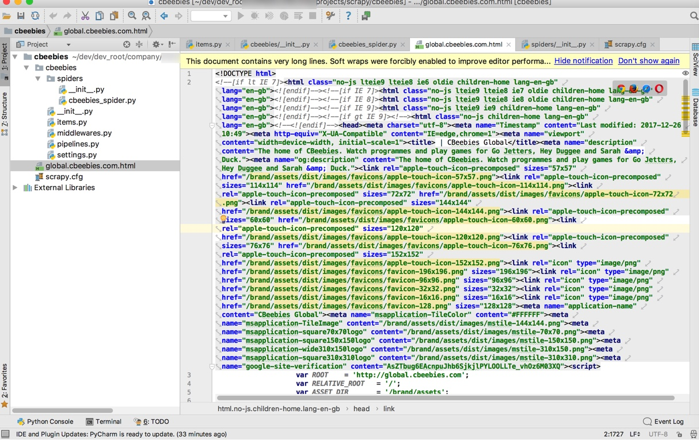
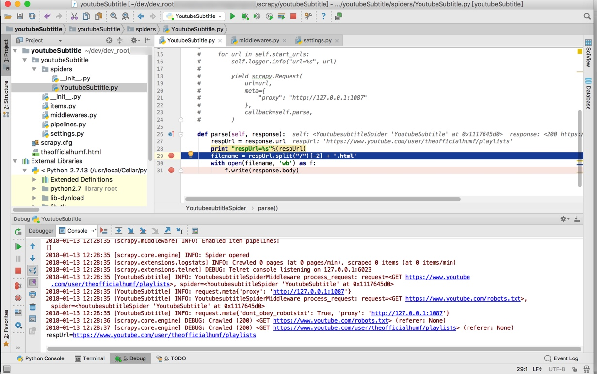
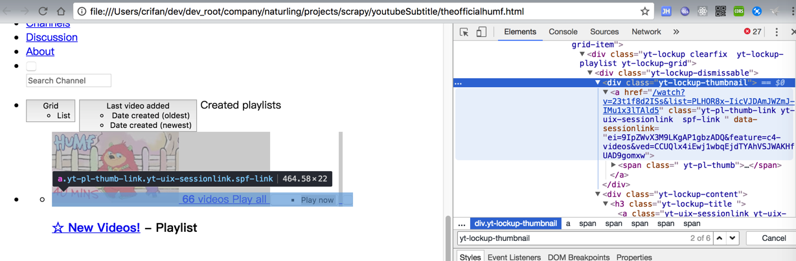
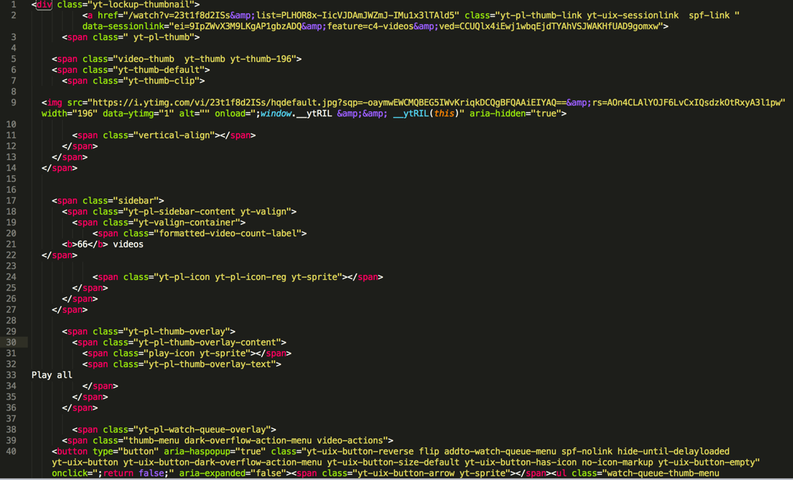
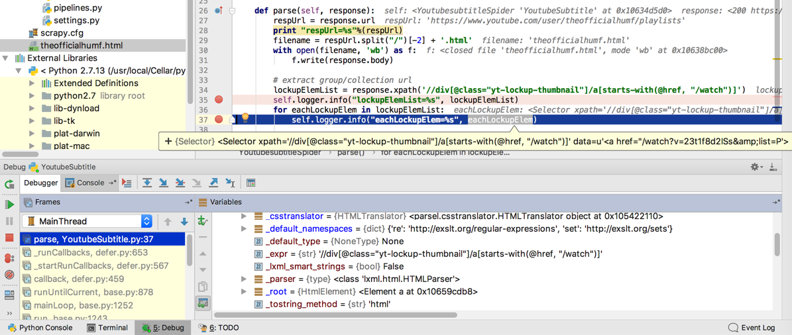
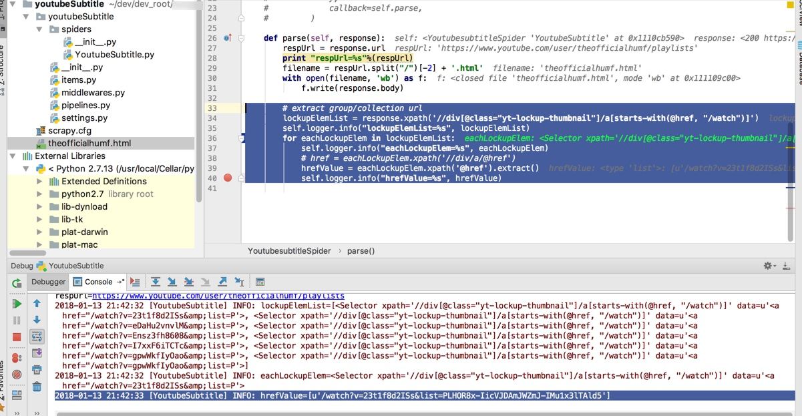
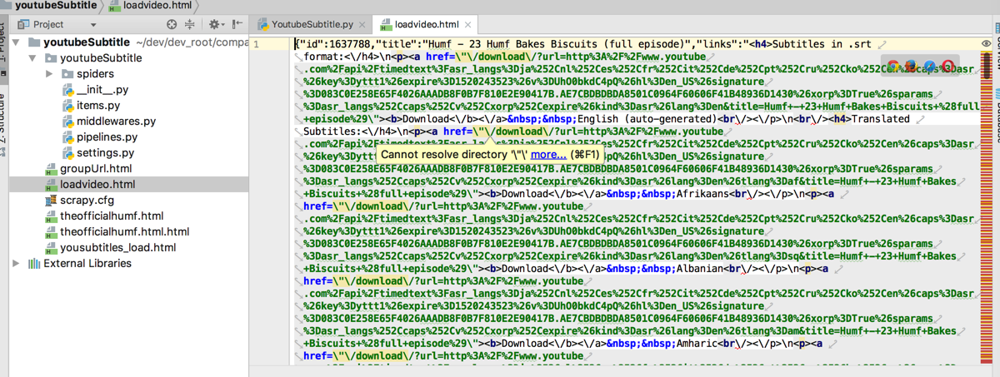
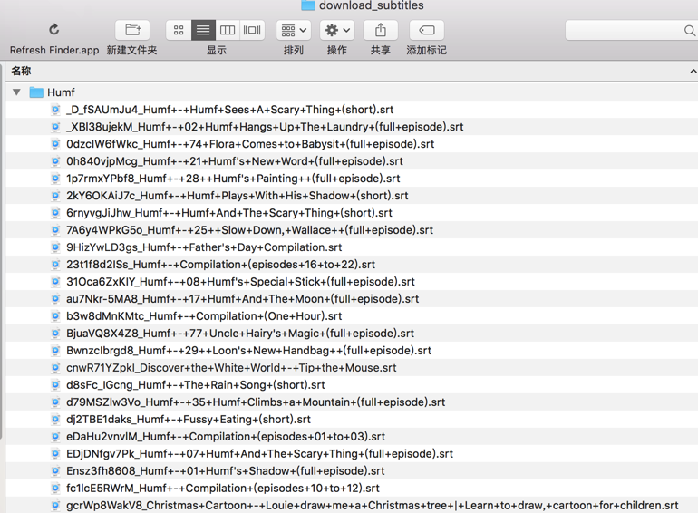

举例
举例：新建cbeebies爬虫
scrapy startproject cbeebies
cd cbeebies
scrapy crawl Cbeebies
即可生成对应的html文件：

举例：抓取Youtube中humf的字幕
需求
想要抓取：
Humf – Official Channel – YouTube – YouTube
其下的各个视频系列中的字幕文件。
其中获取YouTube字幕本身是依赖于：
去实现的。
实现
scrapy startproject youtubeSubtitle
cd youtubeSubtitle
scrapy genspider YoutubeSubtitle youtube.com
生成文件内容：
# -*- coding: utf-8 -*-
import scrapy
class YoutubesubtitleSpider(scrapy.Spider):
name = "YoutubeSubtitle"
allowed_domains = ["youtube.com"]
start_urls = ["http://youtube.com/"]
def parse(self, response):
pass
继续优化和添加内容：
# -*- coding: utf-8 -*-
import scrapy
class YoutubesubtitleSpider(scrapy.Spider):
name = "YoutubeSubtitle"
allowed_domains = ["youtube.com", "yousubtitles.com"]
start_urls = [
"https://www.youtube.com/user/theofficialhumf/playlists"
]
def parse(self, response):
respUrl = response.url
print "respUrl=%s"%(respUrl)
filename = respUrl.split("/")[-2] + ".html"
with open(filename, "wb") as f:
f.write(response.body)
去运行，结果无法访问YouTube，所以要去加上代理：
/xxx/scrapy/youtubeSubtitle/youtubeSubtitle/settings.py
中设置：
DOWNLOADER_MIDDLEWARES = {
# 'scrapy.downloadermiddlewares.httpproxy.HttpProxyMiddleware': 1,
# 'scrapy.downloadermiddlewares.httpproxy.HttpProxyMiddleware': None,
"youtubeSubtitle.middlewares.ProxyMiddleware" : 1
}
/xxx/scrapy/youtubeSubtitle/youtubeSubtitle/middlewares.py
# Start your middleware class
class ProxyMiddleware(object):
def process_request(self, request, spider):
spider.logger.info("YoutubesubtitleSpiderMiddleware process_request: request=%s, spider=%s", request, spider)
request.meta['proxy'] = "http://127.0.0.1:1087"
spider.logger.info("request.meta%s", request.meta)
其中http://127.0.0.1:1087是本地的ss的代理。
即可通过代理访问到YouTube内容了：

此处希望提取的是：

中的：
'//div[@class="yt-lockup-thumbnail"]/a[starts-with(@href, "/watch")]'
经过尝试，是通过：
scrapy shell
fetch("https://www.youtube.com/user/theofficialhumf/playlists")
view(response)
response.body
response.xpath('//div[@class="yt-lockup-thumbnail"]/a[starts-with(@href, "/watch")]')[0].extract()
输出了我们希望的html，拷贝出来效果是：

继续调试，写代码：
def parse(self, response):
respUrl = response.url
print "respUrl=%s"%(respUrl)
filename = respUrl.split("/")[-2] + '.html'
with open(filename, 'wb') as f:
f.write(response.body)
# extract group/collection url
lockupElemList = response.xpath('//div[@class="yt-lockup-thumbnail"]/a[starts-with(@href, "/watch")]')
self.logger.info("lockupElemList=%s", lockupElemList)
for eachLockupElem in lockupElemList:
self.logger.info("eachLockupElem=%s", eachLockupElem)
是可以获得对应的div的element的：

接着去用获取其中a的href的值，方式是：
在Scrapy shell中调试的效果：
>>> response.xpath('//div[@class="yt-lockup-thumbnail"]/a[starts-with(@href, "/watch")]/@href')[0]
<Selector xpath='//div[@class="yt-lockup-thumbnail"]/a[starts-with(@href, "/watch")]/@href' data=u'/watch?v=23t1f8d2ISs&list=PLHOR8x-IicVJD'>
>>> response.xpath('//div[@class="yt-lockup-thumbnail"]/a[starts-with(@href, "/watch")]/@href')[0].extract()
u'/watch?v=23t1f8d2ISs&list=PLHOR8x-IicVJDAmJWZmJ-IMu1x3lTAld5'
代码：
# extract group/collection url
lockupElemList = response.xpath('//div[@class="yt-lockup-thumbnail"]/a[starts-with(@href, "/watch")]')
self.logger.info("lockupElemList=%s", lockupElemList)
for eachLockupElem in lockupElemList:
self.logger.info("eachLockupElem=%s", eachLockupElem)
# href = eachLockupElem.xpath('//div/a/@href')
hrefValue = eachLockupElem.xpath('@href').extract()
self.logger.info("hrefValue=%s", hrefValue)
得到输出：
2018-01-13 21:42:33 [YoutubeSubtitle] INFO: hrefValue=[u'/watch?v=23t1f8d2ISs&list=PLHOR8x-IicVJDAmJWZmJ-IMu1x3lTAld5']

继续调试，为了获取网页的全部内容，经过研究，逻辑是：
Request URL: http://www.yousubtitles.com/loadvideo/23t1f8d2ISs
Request Method: POST
所以写成代码：
import re
foundVideoId = re.search(r'v=(?P<videoId>[\w\-]+)', singleVideoUrl)
if foundVideoId:
videoId = foundVideoId.group("videoId")
self.logger.info("videoId=%s", videoId) # u'23t1f8d2ISs'
# http://www.yousubtitles.com/loadvideo/23t1f8d2ISs
loadVideoUrl = "http://www.yousubtitles.com/loadvideo/" + videoId
self.logger.info("loadVideoUrl=%s", loadVideoUrl) # u'http://www.yousubtitles.com/loadvideo/23t1f8d2ISs'
yield scrapy.Request(url=loadVideoUrl, callback=self.parseLoadVideoResp, method="POST")
def parseLoadVideoResp(self, response):
"""
parse response of yousubtitles load video for each youtube video id
:param response:
:return:
"""
# for debug
self.saveHtml("loadvideo", response.body)
respUrl = response.url
self.logger.info("respUrl=%s", respUrl)
效果：

接着去解析html源码，经过考虑决定用之前就用过的BeautifulSoup
先去安装：
pip install beautifulsoup4
然后写解析代码：
decodedLinksDict = json.loads(response.body)
self.logger.info("decodedLinksDict=%s", decodedLinksDict)
linksHtml = decodedLinksDict["links"]
# self.logger.info("linksHtml=%s", linksHtml)
linksSoup = BeautifulSoup(linksHtml)
englishNode = linksSoup.find(lambda tag : tag.name == "p" and "English" in tag.get_text())
if englishNode:
# self.logger.info("englishNode.contents=%s", englishNode.contents)
self.logger.info("englishNode.text=%s", englishNode.text)
# self.logger.info("englishNode=%s", englishNode)
downloadHref = englishNode.a["href"]
self.logger.info("downloadHref=%s", downloadHref) # /download/?url=….&title=Humf+-+Compilation+%28episodes+16+to+22%29
downloadUrl = "http://www.yousubtitles.com" + downloadHref # http://www.yousubtitles.com/download/?url=http%3A%2F%2F...n&title=Humf+-+Compilation+%28episodes+16+to+22%29
self.logger.info("downloadUrl=%s", downloadUrl)
至此，完整代码是：
# -*- coding: utf-8 -*-
import scrapy
# from scrapy import Request, Spider
from urllib import urlencode, unquote
import re
import json
from bs4 import BeautifulSoup
import os
class YoutubesubtitleSpider(scrapy.Spider):
name = 'YoutubeSubtitle'
allowed_domains = ['youtube.com', "yousubtitles.com"]
start_urls = [
"https://www.youtube.com/user/theofficialhumf/playlists"
]
# def start_requests(self):
# """This is our first request to grab all the urls of the profiles.
# """
# for url in self.start_urls:
# self.logger.info("url=%s", url)
#
# yield scrapy.Request(
# url=url,
# meta={
# "proxy": "http://127.0.0.1:1087"
# },
# callback=self.parse,
# )
def saveToFile(self, filename, content, suffix=".html"):
filename = filename + suffix
with open(filename, 'wb') as f:
f.write(content)
def parse(self, response):
respUrl = response.url
print "respUrl=%s"%(respUrl)
filename = respUrl.split("/")[-2] + '.html'
self.saveToFile(filename=filename, content=response.body)
# with open(filename, 'wb') as f:
# f.write(response.body)
# extract group/collection url
lockupElemList = response.xpath('//div[@class="yt-lockup-thumbnail"]/a[starts-with(@href, "/watch")]')
self.logger.info("lockupElemList=%s", lockupElemList)
for eachLockupElem in lockupElemList:
self.logger.info("eachLockupElem=%s", eachLockupElem)
# href = eachLockupElem.xpath('//div/a/@href')
hrefValue = eachLockupElem.xpath('@href').extract()
self.logger.info("hrefValue=%s", hrefValue)
groupUrl = u"https://www.youtube.com" + hrefValue[0]
self.logger.info("groupUrl=%s", groupUrl)
yield scrapy.Request(url=groupUrl, callback=self.parseEachYoutubeUrl)
def parseEachYoutubeUrl(self, response):
"""
parse each youtube url from group url's response
:param response:
:return:
"""
# for debug
respUrl = response.url
self.logger.info("respUrl=%s", respUrl)
self.saveToFile("groupUrl", response.body)
dataIdElemList = response.xpath('//li[@data-video-id]/a[@href]')
self.logger.info("dataIdElemList=%s", dataIdElemList)
if dataIdElemList:
dataIdElemListCount = len(dataIdElemList)
self.logger.info("dataIdElemListCount=%s", dataIdElemListCount)
for eachDataIdElem in dataIdElemList:
self.logger.info("eachDataIdElem=%s", eachDataIdElem)
hrefValue = eachDataIdElem.xpath('@href').extract()
self.logger.info("hrefValue=%s", hrefValue)
singleVideoUrl = u"https://www.youtube.com" + hrefValue[0]
self.logger.info("singleVideoUrl=%s", singleVideoUrl)
# https://www.youtube.com/watch?v=23t1f8d2ISs&list=PLHOR8x-IicVJDAmJWZmJ-IMu1x3lTAld5&index=1
# # http://www.yousubtitles.com/load/?url=https%3A%2F%2Fwww.youtube.com%2Fwatch%3Fv%3DgtaC1JVjvO4%26index%3D58%26list%3DPLHOR8x-IicVJDAmJWZmJ-IMu1x3lTAld5&ch=1
# yousubtitlesUrlBase = "http://www.yousubtitles.com/load/?"
# youtubeUrlParaDict = {"url" : singleVideoUrl}
# encodedUrlPara = urlencode(youtubeUrlParaDict)
# fullYousubtitlesUrl = yousubtitlesUrlBase + encodedUrlPara
#
# yield scrapy.Request(url=fullYousubtitlesUrl, callback=self.parseYoususbtitlesUrl)
foundVideoId = re.search(r'v=(?P<videoId>[\w\-]+)', singleVideoUrl)
if foundVideoId:
videoId = foundVideoId.group("videoId")
self.logger.info("videoId=%s", videoId) # u'23t1f8d2ISs'
# http://www.yousubtitles.com/loadvideo/23t1f8d2ISs
loadVideoUrl = "http://www.yousubtitles.com/loadvideo/" + videoId
self.logger.info("loadVideoUrl=%s", loadVideoUrl) # u'http://www.yousubtitles.com/loadvideo/23t1f8d2ISs'
yield scrapy.Request(url=loadVideoUrl, callback=self.parseLoadVideoResp, method="POST")
def parseLoadVideoResp(self, response):
"""
parse response of yousubtitles load video for each youtube video id
:param response:
:return:
"""
# for debug
self.saveToFile("loadvideo", response.body)
respUrl = response.url # 'http://www.yousubtitles.com/loadvideo/UhO0bkdC4pQ'
self.logger.info("respUrl=%s", respUrl)
decodedLinksDict = json.loads(response.body)
self.logger.info("decodedLinksDict=%s", decodedLinksDict)
if "links" not in decodedLinksDict:
self.logger.warning("links not in decodedLinksDict=%s", decodedLinksDict)
# {u'error': 1}
else:
linksHtml = decodedLinksDict["links"]
# self.logger.info("linksHtml=%s", linksHtml)
linksSoup = BeautifulSoup(linksHtml)
self.logger.info("linksSoup=%s", linksSoup)
englishNode = linksSoup.find(lambda tag : tag.name == "p" and "English" in tag.get_text())
if englishNode:
# self.logger.info("englishNode.contents=%s", englishNode.contents)
self.logger.info("englishNode.text=%s", englishNode.text)
# self.logger.info("englishNode=%s", englishNode)
downloadHref = englishNode.a["href"]
self.logger.info("downloadHref=%s", downloadHref) # /download/?url=http%3A%2F%2Fwww.youtube.com%2Fapi%2Ftimedtext%3Fsignature%3D0300D3B6307468779D9FE34128AAC8FA4EE978E4.7D5E553538919EB4479D2AD710C693BABDED961D%26sparams%3Dasr_langs%252Ccaps%252Cv%252Cxorp%252Cexpire%26asr_langs%3Des%252Cru%252Cit%252Cnl%252Cpt%252Cde%252Cko%252Cja%252Cen%252Cfr%26caps%3Dasr%26hl%3Den_US%26xorp%3DTrue%26key%3Dyttt1%26expire%3D1520333270%26v%3D23t1f8d2ISs%26kind%3Dasr%26lang%3Den&title=Humf+-+Compilation+%28episodes+16+to+22%29
downloadUrl = "http://www.yousubtitles.com" + downloadHref # http://www.yousubtitles.com/download/?url=http%3A%2F%2Fwww.youtube.com%2Fapi%2Ftimedtext%3Fsignature%3D0300D3B6307468779D9FE34128AAC8FA4EE978E4.7D5E553538919EB4479D2AD710C693BABDED961D%26sparams%3Dasr_langs%252Ccaps%252Cv%252Cxorp%252Cexpire%26asr_langs%3Des%252Cru%252Cit%252Cnl%252Cpt%252Cde%252Cko%252Cja%252Cen%252Cfr%26caps%3Dasr%26hl%3Den_US%26xorp%3DTrue%26key%3Dyttt1%26expire%3D1520333270%26v%3D23t1f8d2ISs%26kind%3Dasr%26lang%3Den&title=Humf+-+Compilation+%28episodes+16+to+22%29
self.logger.info("downloadUrl=%s", downloadUrl)
yield scrapy.Request(url=downloadUrl, callback=self.parseDownloadSubtitlesResp)
else:
self.logger.warning("can not find english subtile node")
def parseDownloadSubtitlesResp(self, response):
"""
parse download subtitles of youtube video
:param response:
:return:
"""
# for debug
respUrl = response.url # http://www.yousubtitles.com/download/?url=http%3A%2F%2Fwww.youtube.com%2Fapi%2Ftimedtext%3Fsignature%3D4A2A6F9EA37E8A508D6D3C93B575ADFFAA910E66.40BD74A9A28E3B158532EE17837676F7B11B1180%26xorp%3DTrue%26sparams%3Dasr_langs%252Ccaps%252Cv%252Cxorp%252Cexpire%26asr_langs%3Dde%252Cru%252Cko%252Cja%252Cen%252Cpt%252Cit%252Ces%252Cnl%252Cfr%26hl%3Den_US%26key%3Dyttt1%26caps%3Dasr%26expire%3D1520333397%26v%3D23t1f8d2ISs%26kind%3Dasr%26lang%3Den&title=Humf+-+Compilation+%28episodes+16+to+22%29
self.logger.info("respUrl=%s", respUrl)
decodedUrl = unquote(respUrl) # http://www.yousubtitles.com/download/?url=http://www.youtube.com/api/timedtext?caps=asr&v=7A6y4WPkG5o&expire=1520334242&asr_langs=en%2Cfr%2Cja%2Cko%2Cde%2Cpt%2Cit%2Cnl%2Cru%2Ces&hl=en_US&xorp=True&key=yttt1&signature=26E544FE885C617E1B6AC946C1EE21C1E0C95795.83020B2CBAF8806252387C5AD7BA0879B2CC1888&sparams=asr_langs%2Ccaps%2Cv%2Cxorp%2Cexpire&kind=asr&lang=en&title=Humf+-+25++Slow+Down,+Wallace++(full+episode)
self.logger.info("decodedUrl=%s", decodedUrl)
foundIdName = re.search(r'[&|?]v=(?P<videoId>[\w\-]+).*&title=(?P<videoTitle>[^&]+)', decodedUrl)
if foundIdName:
videoId = foundIdName.group("videoId") # '7A6y4WPkG5o'
videoTitle = foundIdName.group("videoTitle") # Humf+-+25++Slow+Down,+Wallace++(full+episode)
subtitleFilename = videoId + "_" + videoTitle
downloadFolder = "download_subtitles/Humf"
if not os.path.exists(downloadFolder):
os.makedirs(downloadFolder)
self.saveToFile(downloadFolder + "/" + subtitleFilename, response.body, suffix=".srt")
else:
self.logger.warning("can not find id and name")
# def parseYoususbtitlesUrl(self, response):
# """
# parse each yousubtitles.com download response
# :param response:
# :return:
# """
# # for debug
# self.saveToFile("yousubtitles_load", response.body)
# respUrl = response.url
# self.logger.info("respUrl=%s", respUrl)
即可下载到对应字幕文件了：

后续
其他一些额外优化和需求的实现：
向后传递参数的，可以借用meta
yield scrapy.Request(url=loadVideoUrl, callback=self.parseLoadVideoResp, method="POST", meta={"humfGroupTitle" : humfGroupTitle})
之后的callback中即可通过response.meta去取值：
def parseLoadVideoResp(self, response):
humfGroupTitle = response.meta["humfGroupTitle"]